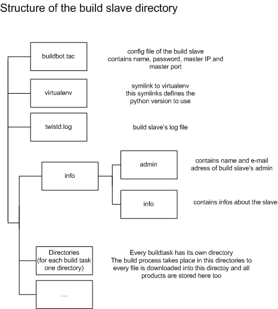

| Author: | Steven Mohr |
|---|---|
| Date: | $Date$ |
| Revision: | $Rev$ |
| Status: | Draft |
This is the structure of the directory:
I've used a netinst image as the base of my buildslave but you can use every image. For the next steps you need to be root:
- zlib1g-dev
- build-essential
- python-all-dev
- python-sqlite2
- python-twisted
- python-turbogears
- subversion
- mercurial
- libbz2-dev
- bzip2
I recommend to install buildbot into an own virtual environment. This has a a lot of advantages but the biggest is that you can switch back to your normal user so for the next steps you don't need to be root
Now we are able to create our first build slave
<master> is IPOfTheBuildMaster:Port. <name> is the slave and should fit this pattern: <OS+architecture>_py<python version>, f.e. Ubuntu64_py25. <passwd> is the password to access the build slaves.
We almost have our first buildslave there's only one thing we have to do before we're finished: Because of an limitation in the mercurial class of BuildBot we have to create 2 directories.
Our first slave is finished. The second is as easy as the first, so let's start:
<master> is the same as before. You only have to change the version number in <name> and define a new password.
The creation of our last slave isn't that easy. The first problem is that there aren't any Py2.3 packages in the repo, so you have to build it from source.
For the next steps you need to be root:
So that's almost everything; one last step
That's it, you have your first three build slave. Now you can start them with buildbot start <DirOfSlave>.
Under Ubuntu it's the same the only difference is that you have to use sudo for all root commands.
I've used OpenSolaris to create the image. It's important to use the Developer Edition. This includes a few packages which you really need.
The first step is to download and install all packages you need for Python, Subversion and Mercurial. It's:
- apache2
- bzip2
- db-4.2
- expat
- gcc-3.4.6
- gdbm
- libiconv
- libintl
- libxml
- mercurial
- ncurses
- neon
- openssl
- python-2.5.1
- readline
- sqlite
- subversion
- swig
- tcl
- tk
- wget
- zlib
This packages are at sunfreeware.com.
The next steps are similar to Debian. You have to install virtualenv, rename it, install setuptools for Py2.5, install virtualenv, rename it, install BuildBot and Twisted, createthe slaves, create directories and symlinks, download and copy tg_sbuildsteps.py and start slaves.
The next three steps have to be done for both slave directories: 9. switch to slave directory 10. create symlink to virtualenv (ln -s /usr/(local/)bin/virtualenv-2.(4 or 5) virtualenv) 11. create directories
- mkdir TG2full
- mkdir TG2full/build
- cd TG2full/build
- mkdir pylons webhelpers
So now you are finished. You have 2 slaves with you can start with buildbot start <DirOfSlave>. If you're building dependencies there could be a problem. The first time you run a build I've got the error that the rsa key of some SVN repo is unknown and that you have to add it manualy. In this case you have to add it manual and start the build again. I will try to list the URLs you have to add but if you get this error you know what to do.
I've stopped working on the Py23 slave for Solaris because I was not able to build Python2.3 on this OS. If I have time after the creation of the Windows slave, I create this slave.
To create a slave with Windows is easy. The how-to from buildbot.net works well. So let's start:
First download some installer:
Edit the environment variables
Install easy_install and virtualenv
Create the slaves
The creation of the slaves is similar to UNIX OS.
Then we have to create some files. 16. Like the symlinks on a unix-like OS, we need something comparable in Windows.
We create a batch file with this content and the name virtualenv.bat in every slave directory: C:python2[3,4,5]scriptsvirtualenv %*
Our last step is to create the directories for the Mercurial checkouts. We need a TG2fullbuildwebhelpers and a TG2fullbuildpylons directory in every slave directory.
- Buildbot needs a stable connection. It's not recommended to run a build slave with a WiFi connection. This will spam Buildbot's waterfall display with connect/disconnect messages.